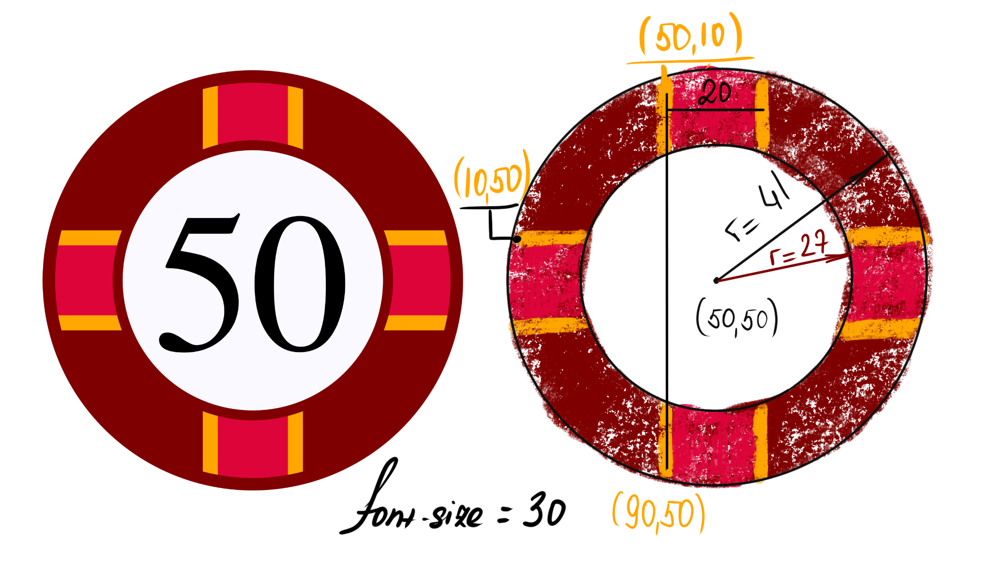

Design und User Interface
Tisch, Symbole und Parameterisierung
Für den Tisch wurde eine grüne Farbe mit hölzerner Umrandung gewählt, bei dem sich links des Dealers ein Schild mit dem Minimum- und Maximumgebot befindet. Um den Tisch dynamisch zu skalieren wurden viewboxes verwendet, welche bei der Veränderung der Browsergröße automatisch die Grafiken skaliert. Des Weiteren hat jeder Spieler ein Kästchen mit seinem Namen, Gebot und Restbetrag, bei dem sich die Farbe des Kästchens entsprechend der 3 Zustände ändert, die der Spieler haben kann. Wenn der Spieler aktiv ist, grau mit opacity: 0.7, wenn er passiv ist, grau mit opacity: 0.3 oder die Farbe ist gelb mit opacity: 0.7, wenn der Spieler an der Reihe ist. Die Karten werden anhand der Variablen in der global_variables.xsl an die richtige Stelle positioniert. Die initialen Positionen der ersten Karte jedes Spielers steht fest, aber die Folgekarten werden mithilfe von cardIndex und eines Offsets bestimmt. Folgend ist ein Beispiel, wie dieser Tisch dann aussehen kann
Die Symbole für die Karten wurden auch von unserem Team selbst entworfen. Dafür haben wir rote und schwarze Standardformen (Kreise, Dreiecke, Polygone) kombiniert, sodass die Blackjack Symbole entstehen. Dabei teilen sich alle Karten denselben Entwurf mit der Nummer und dem Symbol oben links und unten rechts. Das mittlere Bild stellt die Nummer mit der entsprechenden Anzahl an Symbolen in Form von zwei Reihen dar. Wenn die Nummer n ungerade ist, dann hat die erste Reihe (n - 1)/2 an Symbolen und die zweite (n + 1)/2. Die Spezialkarten sind aus dem Internet übernommen.
Außerdem stehen mehrere Chips in unterschiedlichen Farbvariationen und Werten zur Auswahl. Sie haben ein Radius von 41 und haben initiale Koordinaten von x = 5 und y = 80 und werden voneinander mit Schrittgröße 10 getrennt. Ob man auf einen Chip klicken kann, um dessen Betrag zu setzen, hängt von der restlichen balance des Spielers ab. Dabei werden nur Chips als aktiv gezeichnet deren Betrag kleiner/gleich der restlichen balance sind.
Die Knöpfe werden für unterschiedliche Spieleraktionen z.B. Hit, Stand, Double, newRound oder dem Austreten des Spiels verwendet. Abhängig von der Phase sind diese aktiviert (drawing phase) oder deaktiviert ( betting phase oder finished phase). Die Knöpfe haben auch wie Chips initiale Koordinaten von x = 5 und y = 80, sind aber auf Ordinate um 13 nach unten verschoben und haben dort eine Schrittgröße von 10. Der GoToLobby Knopf ist immer aktiv, sodass man immer die Möglichkeit hat den Tisch zu verlassen. Dabei kann man allerdings seinen laufenden Einsatz verlieren. Dahingegen erscheint der NewRound Knopf nur dann, wenn eine Runde beendet wurde und die Gewinne ausgezahlt wurden.
Architektur
Model View Controller
Der Kern unserer Blackjack-Anwendung ist die Model-Komponente im Model View Controller (MVC) Architekturstil.

Implementierung
Datenspeicherung
Unsere XML-Datei befinden sich auf einem BaseX Server, welcher eine Datenbank bereitstellt, die sich perfekt für Webapplikationen eignet. Die Daten der Datenbank können mithilfe von XQuery Abfragen verändert werden.
Client-Server Kommunikation
Unsere Daten werden von einem BaseX Stomp Server verwaltet, weil diese Daten im XML Format gespeichert sind. Für die Abfragen der XML-Datenbank und Ausführung der Spielzüge verwenden wir XQuery. Jedoch können wir die Funktionen nicht direkt vom Spieler aufrufen lassen. Das wird erst durch die Client-Server Kommunikation unter Verwendung von RESTXQ Annotationen ermöglicht. Diese werden mittels der dazugehörigen XQuery Funktion ausgeführt, wenn die annotierte URL vom Spieler aufgerufen wird.
Websocket
Um die Kommunikation zwischen Client und Server ohne vorherige Benachrichtigung zu ermöglichen nutzten wir das HTTP Erweiterungsprotokoll Websocket. Der Websocket erlaubt diese bidirektionale Kommunikation ohne Client Request. Websockets benötigen zumindest eine ID, URL und Subscription. Wir setzten dies um, indem jeden Spieler der sich registiert/einloggt automatisch eine Websocket zugewiesen wird. Die ID des Websockets ist einzigartig, die URL zeigt zu unser Funktion zur Erzeugung des initialen Lobby Screen und die Subscription wird auf den Spielernamen unter dem sich der Spieler eingeloggt hat geführt. Dies setzen wir mit der Redirect Methode um die im Infoblatt erwähnt wurde.
Update Constraint XQuery
XQuery erlaubt es uns XML Daten abzufragen und zurückzugeben. Aber es ist nicht direkt möglich Daten zu manipulieren. Zudem ist es standardmäßig nicht erlaubt, verschiedene Arten von Ausdrücken wie %updating und nicht %updating Funktionen in einem Abfrageergebnis zu mischen. Die Lösung hierfür stellt die XQuery Update Facility bereit. Die Update Facility liefert insert, delete und replace node Kommandos, diese machen es uns möglich bei Spielzügen Spielerdaten zu verändern. Diese Updates werden in einer Pending Update List geführt und unabhängig von der Reihenfolge der Kommandos parallel ausgeführt. Um eine sinnvolle Funktionalität für unser Spiel bereitzustellen haben wir uns nun entschieden diese Problematik durch das Nutzen von web:redirects zu umgehen. Bei update:output werden die gelieferten Inhalte zwischengespeichert und ganz am Ende zurückgegeben, d.h. nachdem alle Aktualisierungen in der Pending Update List verarbeitet wurden. Wenn eines der gelieferten Elemente von einer Aktualisierung betroffen ist, wird stattdessen eine Kopie erstellt und zwischengespeichert. Deshalb konnten wir die update:output Funktionalität nutzen, um auch in %updating Funktionen und andere nicht %updating Funktionen aufzurufen.
Ergebnis

Installation
Um das Spiel spielen zu können wird eine Instanz der BaseX STOMP-Datenbank (https://github.com/BaseXdb/basex/tree/stomp) und des basexhttp-Servers benötigt. Zusätzlich wird für die Installation ebenfalls eine aktuelle Maven Version benötigt.
Für die Installation des Spieles muss der Ordner webapp in den BaseX-Basisordner kopiert werden für das anschließende Setup existieren zwei Möglichkeiten:
Installation mit der BaseX-GUI:
- Öffne die BaseX-GUI und erstelle eine neue Datenbank, indem folgende Schritte ausführen werden: Datenbank
- Neu...
- Auswahl der Eingabedatei oder Verzeichnis: [BaseX-Basisordner]/webapp/xqBlackjack/
- Name der Datenbank: xqBlackjack
- "Ok"